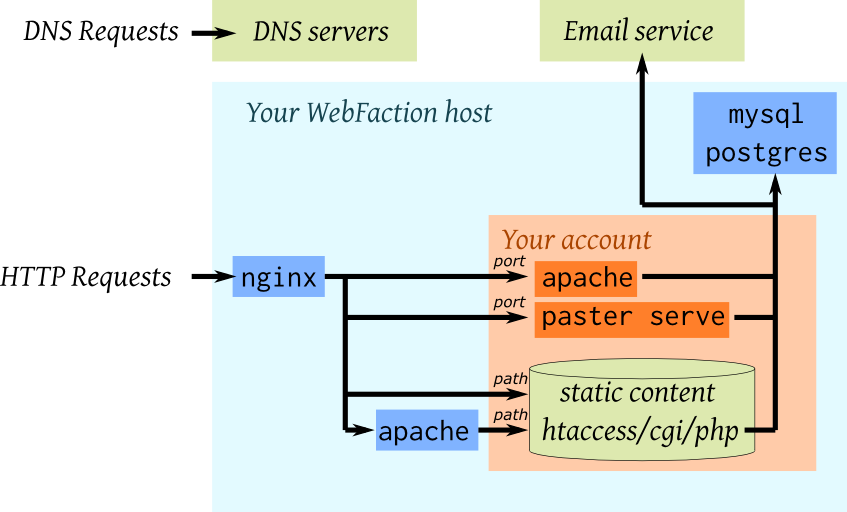
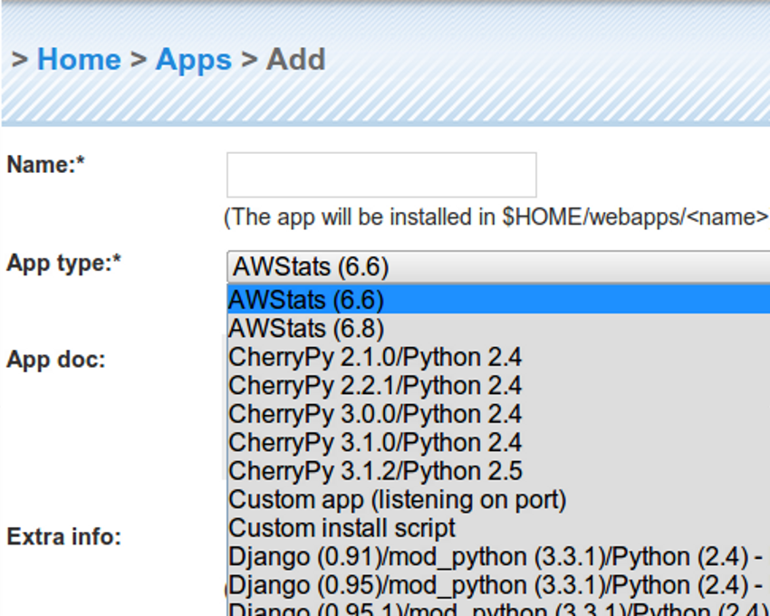
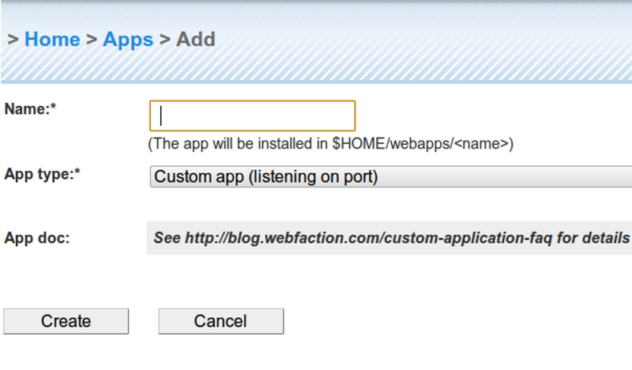
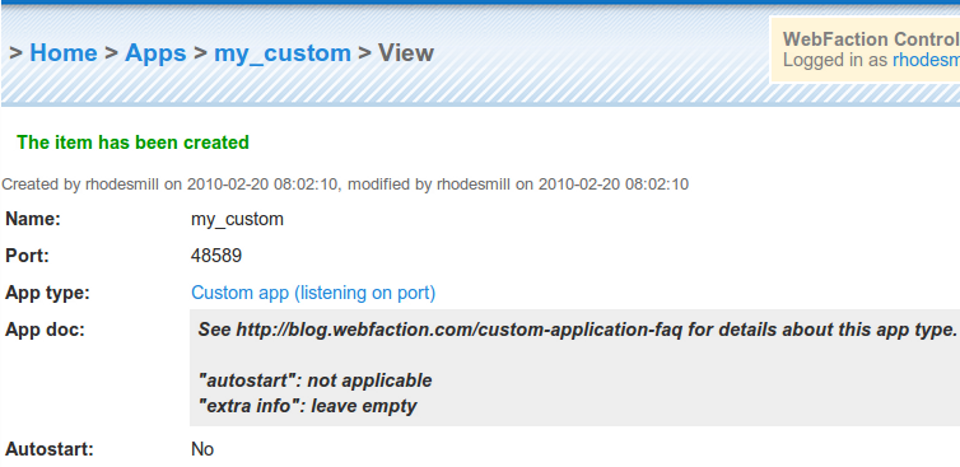

|
PREPARE!
|
Learning Web Hosting Best-Practices From WebFactionBrandon Craig Rhodes
PyCon 2010
|
3 slides of targeting |
What this is not
|
Shared hosting
|
Preview: What did I learn?
|
The WebFaction Landscape |
What is on each web server?
|
|  |
Using the Control Panel
Domain Path Application
----------- ------ -----------
example.com / “my_static_files”
/blog “my_wordpress”
|
|  |
|
Lots of Python apps
CherryPy Django release (both mod_python and mod_wsgi) Django trunk (both mod_python and mod_wsgi) mod_python mod_wsgi Plone Pylons Trac TurboGears Zope plus Drupal, Joomla, Rails, WordPress |
Your AccountAfter creating four web apps
through the Control Panel, your
account might look like this:
/home/you
└── webapps
├── django-test/
├── django-prod/
├── static/
└── wordpress/
But what lies inside?
|
|
Simple static site
~/static ├── logo.png ├── banner.jpg ├── extra.css └── ul-corner2.jpg |
|
paster-based app (pylons, turbogears2) ~/webapps/mystore ├── MANIFEST.in ├── README.txt ├── bin ─ paster, nosetests, test ... ├── development.ini ├── docs ─ index.txt ├── lib │ └── python2.5 ─ (Python packages) ├── mystore │ └── (app source code) ├── setup.cfg └── setup.py |
|
mod_wsgi or mod_python (like django) ~/webapps/my-django-app ├── apache2 │ ├── bin ─ httpd, start, stop, ... │ ├── conf ─ httpd.conf, mime.types │ └── lib, logs, modules ... ├── bin │ └── django-admin.py ... ├── lib │ └── python2.5 ─ (Python packages) ├── myproject │ └── manage.py, settings.py, urls.py ... └── myproject.wsgi |
The Contract
|
Quick Start
myacct.webfactional.com
blog.myacct.webfactional.com
test.myacct.webfactional.com
tg2.myacct.webfactional.com
|
“Custom” appsSince WF only really cares
that your TCP port answers HTTP,
you can dispense with everything else:
Adding a “custom” app in the Control
Panel just allocates a port and adds
an empty directory!
|
|  |
|  |
Permissions$ ls -ld webapps/ drwxr-xr-x 10 root root 4096 Feb 11 11:05 webapps/
|
SecurityWhen so many users share a box
(often, >100 per WebFaction machine)
how do you keep them separate?
|
The Dilemma
Q: How can the web server
read all of the following files
but other users not see them?
/home/you/webapps/yoursite/.htaccess /home/you/webapps/yoursite/.htpassword /home/you/webapps/yoursite/index.html /home/you/webapps/yoursite/logo.png /home/you/webapps/yoursite/portrait.jpg
|
The Answer: ACLs$ ls -ld ~ drwxr-x---+ 22 rhodesmill rhodesmill 4096 ...
|
The Answer: ACLs$ getfacl ~ # file: home/rhodesmill # owner: rhodesmill # group: rhodesmill user::rwx user:apache:r-x user:nginx:r-x group::--x mask::r-x other::--- |
Consequences
|
The Boundaries
|
Almost everything in $HOME
|
Package Management
~/lib/pythonX.Y ~/webapps/foo/lib/pythonX.Y
|
(The tedious arguments)easy_install-X.Y \ --install-dir=$HOME/webapps/app/lib/PythonX.Y --script-dir=$HOME/webapps/app/bin |
Downsides
|
UpsidesA script in a given directory
always runs in the same environment
Libraries that link libpython
follow the same rules as scripts
run from the command line
It is concentric
|
Summary: What works?
|
The End |
(Notes on things to add to the slides above)setfacl -R -m d:u:purple:--- $HOME/webapps/* easy_install easy_install-X.Y \ --install-dir=$HOME/webapps/app/lib/PythonX.Y --script-dir=$HOME/webapps/app_name/bin ack! extra webapps lib dir is confusing because only happens on 1st import of new module! solves problem of how to get interactive prompt, scripts, etc to all follow same rules about adding new sys.paths
|